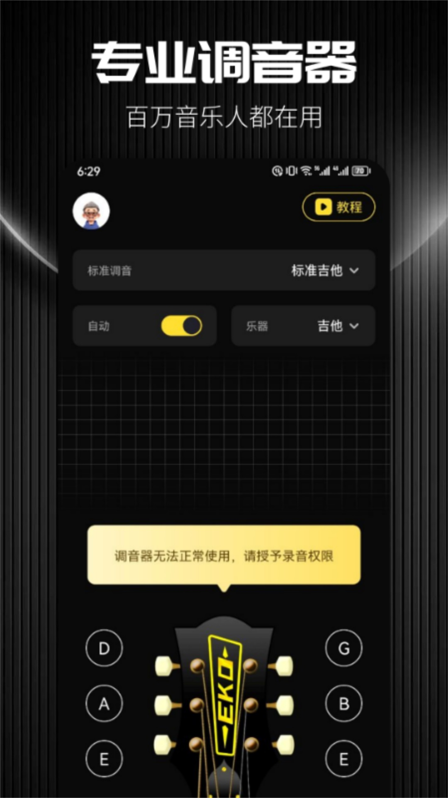

口袋里的六根弦——一款调音应用的迭代观察
从笨重的硬件调音器到点开即用的手机 App，这款应用在多乐器支持与新手友好之间走了一条怎样的路。
现在这版：点开就能调，还能切换变格调弦
Udio是一款手机调音应用，它的官网上展示的界面和我实际用的一致——打开直接就是吉他调音界面，琴头示意图摆在那，六根弦各自的音名按钮分布在两侧，拨一根弦，指针就动。支持的乐器不止吉他：尤克里里、贝斯、小提琴都在列表里，切过去琴头布局瞬间变样，尤克里里从六弦缩成四弦，贝斯换成四根粗弦。
真正让我觉得它和别家不一样的是变格调弦。很多人调 Drop D 调弦（把吉他六弦降一个全音到 D）得手动算频率、反复试，这款应用顶部有个调弦选择器，点一下 Drop D，六弦的参考音就自动换成 D 了。调完切回标准调音也很方便，不用担心下次打开还是半调状态。安装包从下载拿就行，不用折腾。
来路：样本文档没提版本号这件事
我翻了一遍它的文档，发现一件有意思的事——通篇没有出现任何版本号。没有「v2.0 新增贝斯支持」「v3.1 修复尤克里里八度识别」这类常见的更新日志痕迹。这不是文档没写全，更像是团队压根没在版本叙事上花力气。
从能看到的功能点倒推，迭代路径大概是这样的：
最早的起点应该很简单——吉他调音。六根弦，标准定弦 E-A-D-G-B-E，指针偏左偏右各代表什么，拧紧还是放松，这些是所有调音器的基本功。那时候的界面可能只有六根弦的音名按钮和一个指针，没什么多余的东西。
然后加了尤克里里。这一步看起来只是从六弦变四弦，但背后有个反直觉的问题：尤克里里四弦 G 是高八度的，音高顺序不是从小到大排的。吉他是从粗到细一路变高，尤克里里第四弦却「插队」到了高音区——新手第一次调尤克里里最容易在这里懵。应用加尤克里里支持的时候，这个四弦 G 的问题肯定是重点攻关的对象，文档里专门有一页解释「四弦 G 之谜」，说明团队踩过这个坑。
再然后是贝斯和小提琴。这两个乐器的难点和吉他、尤克里里不一样：贝斯低音弦频率低，手机麦克风不容易识别；小提琴没有品丝，全靠手指位置控制音高，调音时对读数精度的要求更高。文档里有「低音弦对策」这一页，说明团队确实针对贝斯的低频识别做过优化。

规律：他们一直在死磕「第一次调不翻车」
从文档的细节能看出来团队的优先级在哪——他们一直在为新手铺路。
最明显的证据是「拧紧还是放松」这一页。这是所有调音器都要面对的基本问题，但这款应用的文档花了一整页来讲指针偏左偏右的方向对应，还专门解释了「为什么高了要放松容易做反」——弦偏高时人的直觉是「再紧一点音更亮」，但音高跟张力是同向的。能想到把这个误区单独拎出来讲，说明团队见过太多新手在这里拧反弦钮。
调音前的三件小事也是同样的思路。环境噪音、手机距离、摆放角度——这些都是第一次接触调音的人容易忽略的细节。文档里甚至给了一个判断环境是否合格的土办法：打开调音界面不拨弦，看指针动不动。不拨弦指针也在乱动，就是环境太吵。这种「不用专业知识也能判断」的提示，是典型的新手友好设计。
另一个细节是对风声的敏感。文档里专门提到应用对风声比较敏感，建议调音时关掉风扇、空调。这个提醒在别的调音器文档里不常见，说明团队收到过不少「我怎么调都不准」的反馈，最后排查出来是风噪的锅。
反过来看，文档里几乎没有提到专业级功能。有没有 temperament（各种音律调法）？有没有自定义调弦保存？有没有调音历史记录？这些进阶功能在素材里完全找不到影子。不是说应用一定没有，而是文档完全没把它们当重点来写——团队的注意力显然不在专业用户那一头。
预判：照这个路线，下一步会加什么
从迭代规律推的话，有几个方向比较确定。
第一个是更多乐器。目前支持的吉他、尤克里里、贝斯、小提琴都是西洋弦乐器，民乐里的古筝、琵琶、二胡其实也有不少调音需求。如果团队继续沿着「弦乐器全覆盖」的路走，民乐是下一个自然的延伸。
第二个是节拍器。很多调音器应用都把节拍器做进去了——调完音顺手开节拍器练音阶，用户留在应用里的时间会更长。如果团队想提高使用频次，这是个低风险的加法。
第三个可能是调音记录。比如每次调音的日期、偏差值、用的调弦类型——对练琴的人来说，能看到自己这把琴的调音变化趋势（是不是某根弦总是跑音？）其实挺有用的。但这个功能涉及到数据存储和界面设计，优先级可能在加乐器之后。
当然这些都是从现有迭代节奏推的，不当官方口径传。也有可能团队下一步根本不是加功能，而是继续优化现有的识别精度——比如让低频贝斯的读数更稳，或者让尤克里里高八度 G 的识别更准。毕竟从文档的细节来看，他们更像是在做一款「能让新手第一次调音就成功」的工具，而不是一款功能堆砌的瑞士军刀。顺手提一句，关于这款应用的参考资料在 GitHub、Gitee 和 GitCode 上都有，国内用户访问后两个会更顺畅。